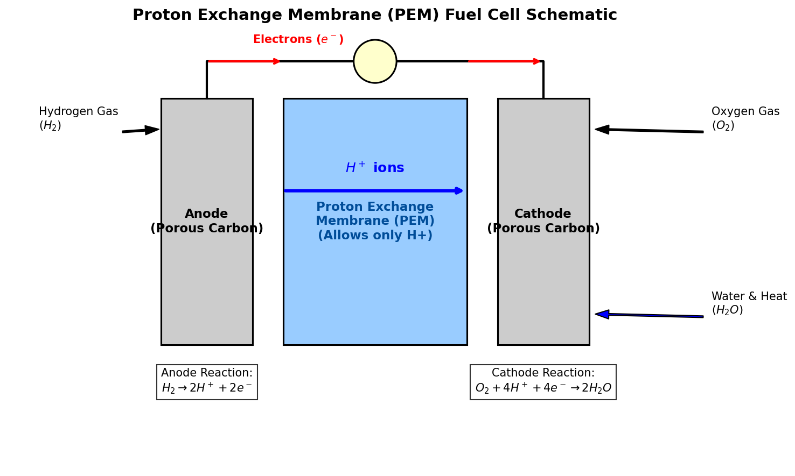

Hydrogen: Chemical Properties, Isotopes, and Technical Applications
1 Introduction to Hydrogen
Hydrogen (atomic symbol H, atomic number 1) is the simplest, lightest, and most abundant chemical element in the universe, constituting roughly 75% of all baryonic mass. On Earth, hydrogen is rarely found in its pure diatomic elemental form (\(\text{H}_2\)) because it reacts readily with other elements. Instead, it is found bound in water, organic molecules, and hydrocarbons.
1.1 Chemical & Physical Properties
- Atomic Configuration: Hydrogen has one proton and one electron (\(1s^1\) electron configuration). It sits in Group 1 of the periodic table, though its behavior is unique compared to the alkali metals.
- Diatomic Form: Pure hydrogen exists as a diatomic gas (\(\text{H}_2\)). It is colorless, odorless, tasteless, and highly flammable at room temperature.
- Energy Density: By weight, hydrogen has the highest energy density of any fuel (about \(120 \text{ MJ/kg}\), nearly three times that of gasoline). However, by volume, its energy density is extremely low, requiring compression (up to 700 bar) or liquefaction (at \(-253^\circ\text{C}\)) for storage.
2 Isotopes of Hydrogen
Hydrogen has three primary isotopes, which are unique because they have their own names due to the significant relative mass differences between them:
- Protium (\(^1\text{H}\)):
- Composition: 1 proton, 0 neutrons, 1 electron.
- Abundance: ~99.98% of all natural hydrogen.
- Deuterium (\(^2\text{H}\) or \(\text{D}\)):
- Composition: 1 proton, 1 neutron, 1 electron.
- Properties: Non-radioactive, heavier than protium. Water enriched with deuterium is called “heavy water” (\(\text{D}_2\text{O}\)), used as a neutron moderator in CANDU nuclear reactors.
- Tritium (\(^3\text{H}\) or \(\text{T}\)):
- Composition: 1 proton, 2 neutrons, 1 electron.
- Properties: Radioactive with a half-life of 12.3 years. It undergoes beta-minus decay to Helium-3 (\(^3\text{He}\)). Tritium is key to D-T fusion reactors.
3 Core Chemical Reactions
Diatomic hydrogen is highly reactive, especially at elevated temperatures or in the presence of catalysts.
3.1 Combustion (Water Synthesis)
The oxidation of hydrogen is a highly exothermic reaction:
\[2\text{H}_2\text{(g)} + \text{O}_2\text{(g)} \rightarrow 2\text{H}_2\text{O(g)} \quad \Delta H = -286 \text{ kJ/mol (per mole of } \text{H}_2)\]
This reaction is clean, producing only water vapor as a byproduct, which makes hydrogen a promising candidate for clean combustion engines and rocket propellants.
3.2 Synthesis of Ammonia (Haber-Bosch Process)
Hydrogen reacts with nitrogen to produce ammonia (\(\text{NH}_3\)), which is the backbone of global fertilizer production:
\[\text{N}_2\text{(g)} + 3\text{H}_2\text{(g)} \rightleftharpoons 2\text{NH}_3\text{(g)} \quad \Delta H = -92.4 \text{ kJ/mol}\]
4 Proton Exchange Membrane (PEM) Fuel Cells
A fuel cell is an electrochemical device that converts the chemical energy of hydrogen and oxygen directly into electricity, with water and heat as the only byproducts.
4.1 How PEM Fuel Cells Work
In a PEM fuel cell, the anode and cathode are separated by a solid polymer membrane (typically Nafion) that is acidic and allows only positively charged protons (\(\text{H}^+\)) to pass through, blocking electrons (\(e^-\)).
- Anode Side: Diatomic hydrogen (\(\text{H}_2\)) is introduced. A catalyst (usually platinum) splits the molecule into protons and electrons: \[\text{Anode Reaction: } \text{H}_2 \rightarrow 2\text{H}^+ + 2e^-\]
- Membrane Migration: Protons travel through the PEM to the cathode.
- Electrical Load: Electrons are forced around the membrane through an external circuit, creating electrical current.
- Cathode Side: Oxygen (\(\text{O}_2\)) is introduced. The oxygen molecules react with the returning electrons and the protons that crossed the membrane to form water: \[\text{Cathode Reaction: } \text{O}_2 + 4\text{H}^+ + 4e^- \rightarrow 2\text{H}_2\text{O}\]

Show Raw Diagram Generator Code
# Generated using Matplotlib inside python script
import matplotlib.pyplot as plt
import matplotlib.patches as patches
fig, ax = plt.subplots(figsize=(10, 6), dpi=150)
ax.set_xlim(-1, 11)
ax.set_ylim(-1, 6)
ax.axis('off')
# Anode
ax.add_patch(patches.Rectangle((1.5, 1), 1.5, 4, facecolor='#cccccc', edgecolor='black', lw=1.5))
# Membrane
ax.add_patch(patches.Rectangle((3.5, 1), 3, 4, facecolor='#99ccff', edgecolor='black', lw=1.5))
# Cathode
ax.add_patch(patches.Rectangle((7.0, 1), 1.5, 4, facecolor='#cccccc', edgecolor='black', lw=1.5))
# Wire and bulb
ax.plot([2.25, 2.25, 5, 7.75, 7.75], [5, 5.6, 5.6, 5.6, 5], color='black', lw=2)
circle = patches.Circle((5, 5.6), 0.35, color='#ffffcc', ec='black', lw=1.5, zorder=5)
ax.add_patch(circle)5 Industrial Applications
5.1 Metal Refining and Green Steel
In traditional metallurgy, coke (coal-derived carbon) is used as a reducing agent in blast furnaces to refine iron ore (\(\text{Fe}_2\text{O}_3\)), releasing massive amounts of carbon dioxide (\(\text{CO}_2\)):
\[\text{Fe}_2\text{O}_3 + 3\text{C} \rightarrow 2\text{Fe} + 3\text{CO}\]
By replacing carbon with hydrogen, the reduction process yields water vapor instead of carbon dioxide:
\[\text{Fe}_2\text{O}_3 + 3\text{H}_2 \rightarrow 2\text{Fe} + 3\text{H}_2\text{O}\]
This process, known as Hydrogen Direct Reduction (H-DR), is the foundation of the emerging “green steel” industry. To make this process completely carbon-free, the hydrogen must be produced via electrolysis (splitting water into hydrogen and oxygen using renewable electricity):
\[2\text{H}_2\text{O(l)} + \text{electricity} \rightarrow 2\text{H}_2\text{(g)} + \text{O}_2\text{(g)}\]
5.2 Industrial Ammonia Production
Over 50% of the world’s industrial hydrogen is consumed in the Haber-Bosch process. Ammonia is synthesized under high pressures (\(150-250 \text{ bar}\)) and temperatures (\(400-500^\circ\text{C}\)) over an iron-based catalyst.
Because the reaction is reversible, Le Chatelier’s principle dictates that high pressures favor the forward reaction (as 4 moles of reactant gas compress to 2 moles of product gas), while high temperatures are a compromise between reaction rate and equilibrium yield.
5.3 Other Applications
- Rocket Propellant: Liquid Hydrogen (\(\text{LH}_2\)) is used alongside liquid oxygen (\(\text{LOX}\)) in rocket engines (such as the Space Shuttle Main Engines or the SLS core stage) due to its high specific impulse.
- Hydrogenation: In the food industry, hydrogen is reacted with unsaturated vegetable oils in the presence of a nickel catalyst to create saturated fats (solidifying them into margarine).
- Petroleum Hydrocracking: Refineries use hydrogen to break down heavy long-chain hydrocarbons into lighter, more valuable fuels (gasoline, diesel).